Bir zamanlar mahallenin gözdesi olan ama yıllardır kapalı duran bir pet café var. Oyuncu bu mekânı devralıyor, kapıları yeniden açıyor ve çevrede kimsesiz kalmış hayvanları teker teker kurtarıp evlat ediniyor. Her geçilen seviye café'ye ya yeni bir dekor parçası ya da yeni bir sakin kazandırıyor: oyuncu hem bir mekânı hem de küçük bir aileyi birlikte büyütüyor.
Royal Match ve Toon Blast'ın gerçek oyuncu kitlesi ağırlıklı olarak kadın, bu iki oyunun analizinde tekrar tekrar karşımıza çıkan bir bulgu. Pet café ve hayvan kurtarma teması bu kitleye doğal olarak oturuyor: bakım, şefkat ve düzenleme dürtüsüne hitap ediyor, uzay ya da savaş gibi soğuk ve mesafeli temaların tam tersi bir duygu taşıyor.
Board'daki eşleşme elemanları beş sabit renkten oluşur. RM'nin aksine hepsi yuvarlak değil, sadece Sabun Baloncuğu fiziksel olarak gerçek bir küre; diğer dördü kendi nesnesinin doğal, yuvarlak olmayan siluetini taşıyor.
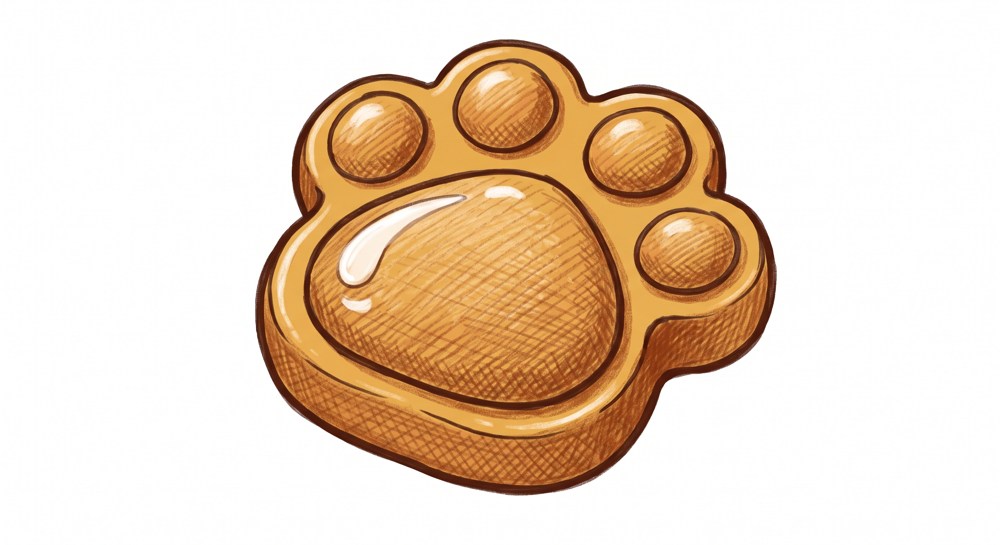
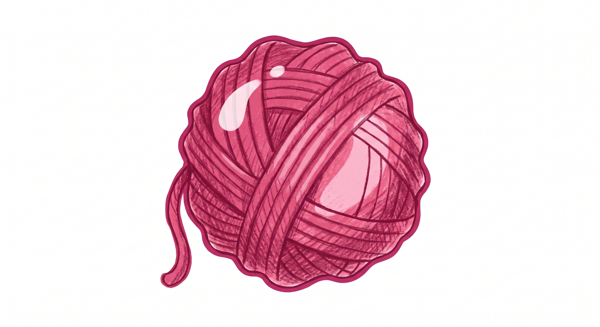
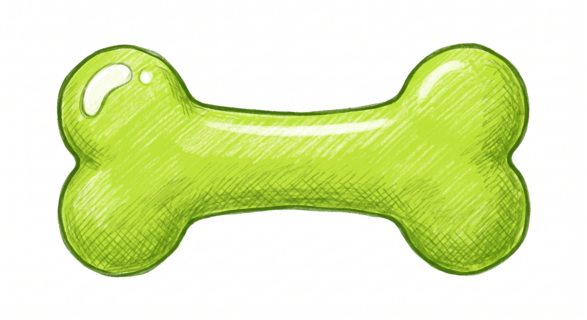
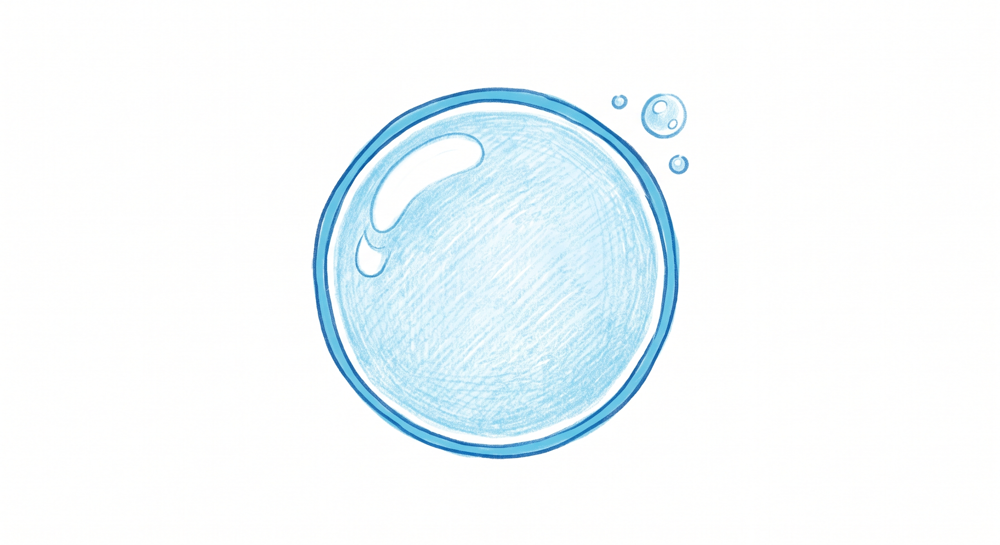
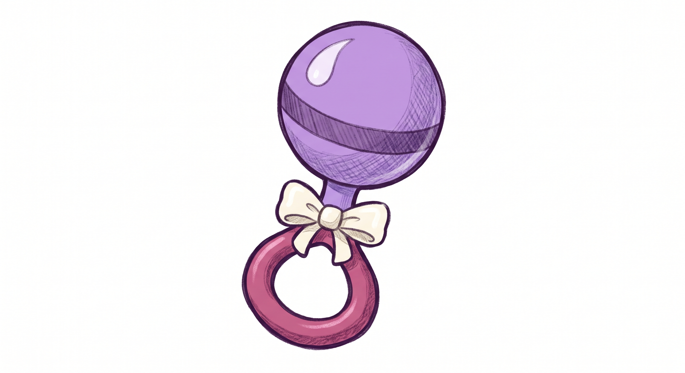
Yuvarlak değil: top-kafa, sap, fiyonk ve halkadan oluşan dikey bir siluet. Ana top ve halka aynı mor-pembe palet ailesinde, kurdele hafif krem tonuyla vurgulanıyor.
Tap-to-blast olduğu için gruplar RM'nin swap-tabanlı düz dizilimleri gibi değil, düzensiz "blob" şeklinde oluşuyor. Önemli olan dizilim değil, grubun büyüklüğü.
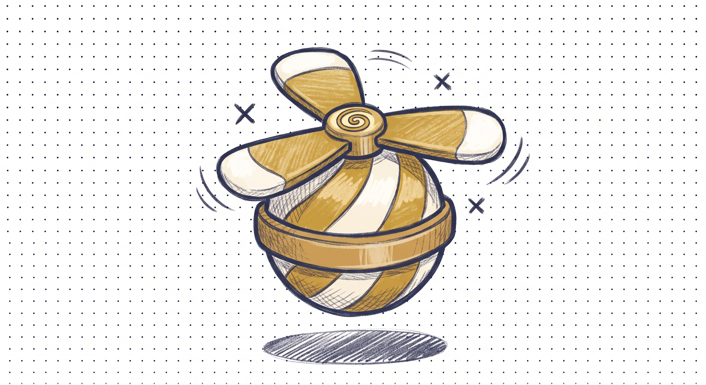
Tam 4'lük grup bir Kanat oluşturur. Aktive olunca önce bulunduğu hücre ve komşularını temizler, ardından uçup 1 hedefe daha gidip vurur.
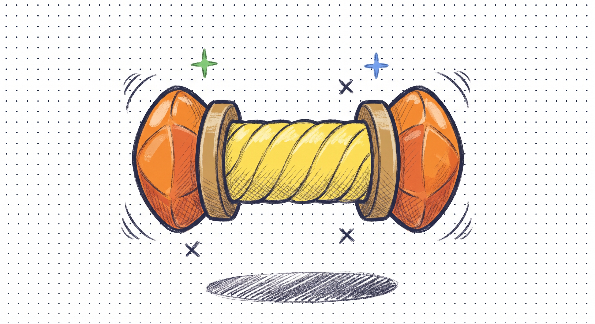
5-6'lık grup bir Parti Düdüğü oluşturur, board'da rastgele bir satır/sütun konumunda beliriyor (tap-to-blast'ta sabit eksen yok, RM'nin "eksenin tersi" kuralı burada işlemiyor).
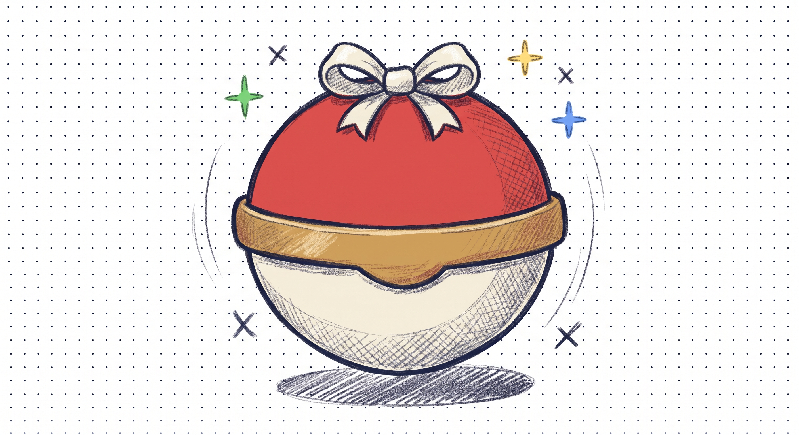
7-8'lik grup bir Sürpriz Kapsülü oluşturur. Açıldığında etrafındaki 3×3'lük alanı temizler.
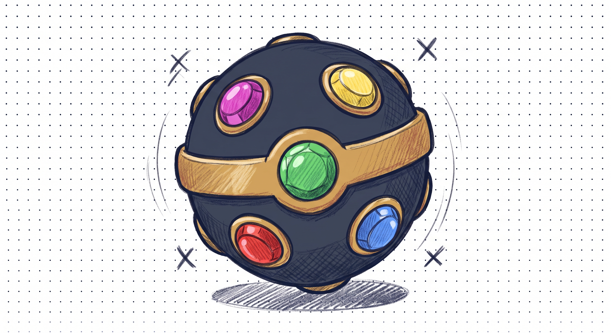
9+'luk grup bir Işıltı Topu oluşturur. Aktive olunca board'da en çok bulunan elementin tamamını temizler. Bu RM'nin gerçek davranışı: oluştuğu rengi değil, board'un çoğunluk rengini hedefliyor.
Dokunulduğunda her power-up kendi solo etkisini uyguluyor.
Kendi 4 komşusunu temizler, ardından uçup 1 hedefi bulup vurur.
Bulunduğu satırın ya da sütunun tamamını temizler, engellerden 1 katman indirir.
Etrafındaki 3×3'lük alanı temizler.
Board'daki en yaygın elementin tamamını temizler; konumu değil, sayısı önemli.
Sürükleyerek manuel birleştirme yok, tap-only: yan yana duran power-up'lardan herhangi birine dokununca hepsi toplanıyor, ama sadece en yüksek 2 tier (Işıltı > Sürpriz > Parti > Kanat) gerçek komboyu tetikliyor.
O hücreden hem tam satır hem tam sütun temizlenir (artı şeklinde).
4 yöne 3'er Parti Düdüğü fırlatılır (toplam 12).
Tek 3×3 yerine 9×9'luk alan patlar (board sınırına göre kırpılabilir).
Seçili renkteki tüm elementler rastgele yönlü Parti Düdüğü'ne dönüşüp hepsi ateşlenir.
Seçili renkteki tüm elementler Sürpriz Kapsülü'ne dönüşüp hepsi patlar.
Tüm board temizlenir, her engelden yine sadece 1 katman iner (evrensel kural burada da geçerli).
Kanat'ın komşuları patlar, Kanat Parti Düdüğü'nü bir engele taşır, orada ateşlenir.
Aynı taşıma mantığı, Sürpriz Kapsülü'nü engele taşıyıp orada patlatır.
En çok bulunan renk Kanat'a dönüşür, her biri kendi komşularını patlatıp birer engele gider (yine sadece 1 katman).
Bastığımız hücrenin etrafındaki komşular patlar, ardından 3 tane Kanat oluşup her biri ayrı bir engele gider.
Power-up'lardan ayrı bir kategori: kazanılan ya da satın alınan, seviye içinde elle kullanılan araçlar. RM'nin sırasını ve seviyelerini izliyoruz.
Tek bir hedefi anında yok eder. L8'de açılıyor.
Tüm satırı temizler. L13'te açılıyor.
Tüm sütunu temizler. L16'da açılıyor.
Board'daki tüm elementleri karıştırır. L18'de açılıyor.
4 tekrar eden "kural tipi" + RM'nin 5. kural tipi (Renk kümesi) + geç-seviye bir "istila" objesi, toplam 6 aile.
Komşuluk (4-yön). Katman arttıkça çivi eklenir. L1.
Üstünde eşleşme gerekiyor. Koyulaşan yeşil = daha fazla katman. L4.
Komşuluk (8-yön, çapraz dahil). L11.
Statik üretici: kırılmaz, komşulukta ürün üretir. L21.
Yerçekimine tabi, sınırlı/sabit oranlı yağıyor, sadece komşu eşleşmeyle temizleniyor. L31.
Renk kümesi: 4-5 rengin hepsinden birer komşu eşleşme alınca kırılıyor. L41.
İlk 50 seviye boyunca yeni engel, booster, mini-oyun ve meta-sistemlerin açıldığı sıralama: zorluk_dengesi.md resmi kaynağından, blok blok.
İlk engel ailesi: komşuluk (4-yön) kuralıyla açılıyor.
İkinci engel ailesi: üstünde eşleşme kuralı.
Café'nin dışında sokakta yaşayan bir kedi bulunup kurtarılıyor. Bu, "önce kurtar, sonra fonksiyonel rol" örüntüsünün ilk adımı: kedi sadece bir maskot değil, blok 2 boyunca oyuncuya eşlik edip L16'da Kedi Sıçrayışı booster'ı olarak resmi bir mekaniğe dönüşüyor.
3'er Parti Düdüğü, Sürpriz Kapsülü ve Işıltı Topu hediye ediliyor. Seviye başlamadan board'a yerleşen bu araçlar, oyuncuyu ileride Koleksiyon Barı'nın (L27) besleyeceği kalıcı bir kaynağa alıştırıyor.
İlk in-game booster.
Dış cephe tamamlanıyor.
Üçüncü engel ailesi: komşuluk (8-yön, çapraz dahil). Blok 2 başlıyor.
Satır temizleyen booster.
Sütun temizleyen booster. L6'da kurtarılan kedi burada resmileşiyor.
Karıştırma booster'ı açılıyor, hemen ardından bahçeye açılan kapıda yaralı bir kuş bulunup kurtarılıyor. Kedi ile aynı "önce kurtar, sonra fonksiyonel rol" örüntüsü tekrarlanıyor: bu kuş blok 3 başında (L21) Kuş Yuvası engeli olarak geri dönüp hem yeni bölgeye (Bahçe) hem de o seviyenin üçlü büyük anına bağlanıyor.
RM'nin gerçek L19 zirvesiyle bilinçli bir paralellik: bölge geçişinden hemen önce gelen en zor seviye.
Bonus altın toplama bölümü: tek renk, risksiz bir rahatlama. Blok 2 burada kapanıyor.
Üçlü büyük an: yeni alan (Bahçe), yeni engel ve sosyal özellik aynı seviyede geliyor. Hem RM hem TB takım kilidini tam L21'de açıyor. Klan Savaşı (24 saatlik, üyelerin toplam geçtiği seviyeye göre) ve can isteme/verme ile oyuncuyu bir gruba bağlayıp günlük geri dönüşü teşvik ediyor.
24 saatlik rekabetçi bir turnuva: geçilen her seviye hem Takım'a hem bu havuza puan olarak gidiyor, ~30 kişilik havuzda ilk 10 ödül kazanıyor. Günde en az 1 seviye oynamak böylece kendi başına ödüllendiriliyor, kısa döngülü bir rekabet hissi doğuyor.
Yün Yumağı biriktirme çubuğu, 24 saatte 25 kademeli ödül veriyor. Belirli bir elementi bilinçli hedeflemeyi ödüllendiriyor ve Pre-Game Booster'ların (L7) kalıcı, tekrar eden kaynağı oluyor.
Bahçede oyuncu, zemin altında tozlu bir mahzen kapısı keşfediyor ve kapıyı açınca içeride kısa süreliğine mahsur kalıyor. Bloğun ikincil zirvesinden hemen sonra gelen bu sahne, henüz resmen açılmamış Blok 4'ün (Mahzen, L31-35) varlığını önceden haber veren bir narratif önsöz.
Günlük, 30 dakikalık, sınırsız canlı bir turnuva: puan seviye geçmeye değil Işıltı Topu kullanımına bağlı, ~10 kişilik havuzda yarışılıyor. Belirli bir power-up'ın kullanımını ödüllendirerek Kraliyet Kupası'ndan farklı bir yarışma dokusu sunuyor.
Geç-seviye "istila" engeli: Mahzen bloğu burada başlıyor.
Koleksiyon Barı ilerlemesini ve Işıltı Topu miktarını otomatik olarak 2'ye katlıyor. 10 hakla başlıyor, sadece kayıpta azalıyor; kazanma serisini anlık bir ödülle pekiştiriyor, haklar tükenince de oyuncuyu etkinlik ya da satın alma yoluyla yeniden doldurmaya yönlendiriyor.
Mahzen tamamlanıyor; her 48 saatte 1 rastgele Pre-Game power-up ve 1 rastgele booster üreten iki bağımsız makine açılıyor. Ödüller otomatik verilmediği için oyuncuyu "geri gel ve topla" alışkanlığına sokuyor: klasik bir retention kancası.
Art arda kazanma ödül merdiveni, RM'nin Kahyanın Hediyesi'ne birebir paralel: 3. kazançta Roket, TNT ve Işıltı Topu ile başlıyorsun, tek kayıp ilerlemeyi sıfırlıyor. Kazanma serisini korumayı cazip kılıp dikkatli oynamayı ödüllendiriyor.
Sezonluk, çift sütunlu (ücretsiz/Kahve Pass) bir battle-pass: aynı ilerleme (Kahve Çekirdeği) her iki sütunu da besliyor. Sezon boyunca düzenli oynamayı teşvik eden uzun vadeli bir hedef sunuyor, premium tarafta da gelir sağlıyor.
Block Blast tarzı bir yan oyun: kalıcı bir ızgaraya kumaş yamalarıyla yorgan dikiyorsun, puanlar altına çevriliyor. Ana oyundan bağımsız, temaya uygun bir "rahatlama" aktivitesiyle oturum süresini ve altın kaynağını artırıyor.
L28 ile aynı kategoride: bloğun en zorlu seviyelerinden biri.
L20'nin ikinci tekrarı: moral ve kaynak takviyesi.
Son engel ailesi (renk kümesi) burada açılıyor. Pati Albümü ise sticker-album tarzı bir kart koleksiyonu: kartlar Kraliyet Kupası, Işık Yarışması, Koleksiyon Barı, Kahve Bileti ve Mahzen makineleri gibi hemen hemen tüm diğer sistemlerin ödül havuzundan geliyor. Oyuncuyu tek bir sisteme değil, oyundaki tüm etkinliklere bağlıyor; ay sonundaki büyük ödül rastgele kart sayısıyla değil belirli bir setin tamamlanmasıyla kazanılıyor, bu da klasik "eksik kartı tamamlama" dürtüsünü tetikliyor.
Önceki "kurtarma" mini-oyunlarından farklı bir format: yeni bir karakter tanıtmıyor, L18'de kurtarılıp L21'de Kuş Yuvası olarak yerleşen kuşla yeniden buluşma anı yaşatıyor. 9 kafesten 4 çifti eşleştirince son kafeste aynı kuş karakteri çıkıyor; oyuncuya tanıdık bir dostu ziyaret etme hissi veren, sürekliliği pekiştiren bir an.
Oyunun en yüksek puanlı ve tek "Çok Zor" seviyesi.
Üçüncü bonus altın bölümü ile 50 seviyelik kapsam tatmin edici bir finalle kapanıyor.
Zorluğu tasarım zamanında hesaplayabilmek için üç kaldıraca dayanan bir formül kullanıyoruz: Efektif Vuruş, Board Dizilimi ve Renk Sayısı. Gerçek oynama verisi ("Yaşanan Zorluk") kullanmıyoruz, her şey seviye tasarlanırken önceden hesaplanabiliyor.
Bu formül tüm 50 seviye için hesaplanmış durumda, kaynak zorluk_dengesi.md. Sonuçlar 7 kademeli bir zorluk skalasına (Çok Kolay'dan Çok Zor'a) dönüşüyor ve blok blok "testere dişi" bir eğri izliyor: yükselme, zirve, rahatlama.
Formülün tüm seviyelere uygulanmış hâli, kaynak dosyadaki ham veriyle birebir.
| Seviye | Tema | Engel | Meta / Özellik | Renk | Hücre | Doluluk | Hedef | Efektif Vuruş | Hamle | Oran | Puan | Zorluk |
|---|---|---|---|---|---|---|---|---|---|---|---|---|
| 1 | Café Dışı | Kedi Kutusu | - | 4 | 72 | %100 | 36 | 36 | 30 | 1.20 | 10.80 | Çok Kolay |
| 2 | Café Dışı | - | - | 3 | 81 | %100 | 36 | 36 | 27 | 1.33 | 6.93 | Çok Kolay |
| 3 | Café Dışı | - | - | 3 | 81 | %100 | 25 | 50 | 27 | 1.85 | 9.62 | Çok Kolay |
| 4 | Café Dışı | Halı Lekesi | - | 3 | 81 | %100 | 49 | 49 | 30 | 1.63 | 8.49 | Çok Kolay |
| 5 | Café Dışı | - | - | 3 | 73 | %90.1 | 30 | 60 | 30 | 2.00 | 12.15 | Kolay |
| 6 | Café Dışı | - | Kediyi Kurtar mini-oyunu (ara ekran) | 3 | 72 | %88.9 | 72 | 108 | 35 | 3.09 | 19.13 | Orta Kolay |
| 7 | Café Dışı | - | Pre-Game Booster'lar açılıyor | 3 | 81 | %100 | 49 | 98 | 25 | 3.92 | 20.37 | Orta Kolay |
| 8 | Café Dışı | - | Pati Vuruşu booster açılıyor | 3 | 81 | %100 | 59 | 84 | 24 | 3.50 | 18.19 | Orta Kolay |
| 9 | Café Dışı | - | - | 4 | 64 | %80 | 42 | 62 | 28 | 2.21 | 25.07 | Orta |
| 10 | Café Dışı (blok 1 biter) | - | Dış cephe tamamlanır | 3 | 81 | %100 | 54 | 72 | 36 | 2.00 | 10.39 | Çok Kolay |
| 11 | Café İçi (blok 2 başlar) | Oyuncak Dolabı | - | 3 | 81 | %100 | 40 | 64 | 27 | 2.37 | 12.32 | Kolay |
| 12 | Café İçi | - | - | 3 | 72 | %100 | 31 | 62 | 30 | 2.06 | 12.08 | Kolay |
| 13 | Café İçi | - | Kuyruk Süpürgesi booster açılıyor | 3 | 72 | %100 | 47 | 94 | 30 | 3.13 | 18.31 | Orta Kolay |
| 14 | Café İçi | - | - | 3 | 64 | %100 | 40 | 120 | 27 | 4.44 | 29.23 | Orta |
| 15 | Café İçi | - | - | 3 | 81 | %100 | 72 | 108 | 20 | 5.40 | 28.06 | Orta |
| 16 | Café İçi | - | Kedi Sıçrayışı booster açılıyor | 3 | 72 | %100 | 36 | 108 | 35 | 3.09 | 18.04 | Kolay |
| 17 | Café İçi | - | - | 3 | 81 | %85 | 40 | 80 | 18 | 4.44 | 25.05 | Orta |
| 18 | Café İçi | - | Oyuncak Sepeti açılıyor, ardından Kuşu Kurtar mini-oyunu | 4 | 70 | %97.2 | 38 | 92 | 34 | 2.71 | 25.41 | Orta |
| 19 | Café İçi | - | - | 4 | 84 | %93.3 | 32 | 128 | 27 | 4.74 | 37.86 | Orta Zor |
| 20 | Café İçi (blok 2 biter) | - | Bonus altın toplama bölümü | 1 | 81 | %100 | 0 | 0 | 20 | 0.00 | 0.00 | Çok Kolay |
| 21 | Bahçe (blok 3 başlar) | Kuş Yuvası | Takım/Klan açılıyor (üçlü büyük an) | 3 | 72 | %100 | 20 | 40 | 28 | 1.43 | 8.35 | Çok Kolay |
| 22 | Bahçe | - | - | 3 | 42 | %39.5 | 22 | 44 | 30 | 1.47 | 23.39 | Orta Kolay |
| 23 | Bahçe | - | - | 3 | 63 | %64.1 | 35 | 70 | 30 | 2.33 | 19.47 | Orta Kolay |
| 24 | Bahçe | - | - | 3 | 72 | %81.9 | 72 | 104 | 26 | 4.00 | 25.84 | Orta |
| 25 | Bahçe | - | Kraliyet Kupası açılıyor | 3 | 81 | %90 | 48 | 99 | 26 | 3.81 | 20.86 | Orta Kolay |
| 26 | Bahçe | - | - | 3 | 72 | %88.9 | 51 | 102 | 23 | 4.43 | 27.50 | Orta |
| 27 | Bahçe | - | Koleksiyon Barı açılıyor (Yün Yumağı) | 3 | 65 | %100 | 36 | 108 | 22 | 4.91 | 31.79 | Orta Zor |
| 28 | Bahçe | - | Mahzende Mahsur Kalma mini-oyunu (ara ekran) | 4 | 64 | %100 | 48 | 100 | 26 | 3.85 | 38.94 | Orta Zor Zor |
| 29 | Bahçe | - | - | 2 | 81 | %100 | 60 | 120 | 30 | 4.00 | 11.31 | Çok Kolay |
| 30 | Bahçe (blok 3 biter) | - | Işık Yarışması açılıyor | 3 | 54 | %80 | 28 | 56 | 28 | 2.00 | 17.43 | Kolay |
| 31 | Mahzen (blok 4 başlar) | Tüy İstilası | - | 3 | 63 | %90 | 20 | 50 | 32 | 1.56 | 11.00 | Çok Kolay |
| 32 | Mahzen | - | 2x Joker devreye giriyor | 3 | 76 | %88.9 | 51 | 112 | 26 | 4.31 | 25.30 | Orta |
| 33 | Mahzen | - | - | 4 | 81 | %88.9 | 51 | 108 | 32 | 3.38 | 28.64 | Orta |
| 34 | Mahzen | - | - | 5 | 81 | %90 | 25 | 50 | 30 | 1.67 | 19.64 | Orta Kolay |
| 35 | Mahzen (blok 4 biter) | - | Mahzen tamamlanıyor, 2 makine açılıyor | 4 | 81 | %100 | 40 | 80 | 26 | 3.08 | 24.62 | Orta Kolay |
| 36 | Mutfak (blok 5 başlar) | - | Mahzenin Mahsulü açılıyor | 3 | 64 | %88.9 | 54 | 108 | 28 | 3.86 | 26.90 | Orta |
| 37 | Mutfak | - | Kahve Bileti açılıyor | 4 | 64 | %88.9 | 54 | 96 | 34 | 2.82 | 30.32 | Orta |
| 38 | Mutfak | - | Yorgan Bulmacası açılıyor | 4 | 72 | %100 | 54 | 108 | 26 | 4.15 | 37.38 | Orta Zor |
| 39 | Mutfak | - | - | 4 | 68 | %100 | 54 | 108 | 26 | 4.15 | 39.58 | Orta Zor Zor |
| 40 | Mutfak | - | Bonus altın toplama bölümü | 3 | 81 | %100 | 20 | 60 | 28 | 2.14 | 11.13 | Çok Kolay |
| 41 | Mutfak | Mama Makinesi (renk kümesi) | Pati Albümü açılıyor | 3 | 81 | %100 | 20 | 60 | 26 | 2.31 | 11.99 | Kolay |
| 42 | Mutfak | - | - | 3 | 72 | %100 | 26 | 112 | 32 | 3.50 | 20.46 | Orta Kolay |
| 43 | Mutfak | - | Hafıza/eşleştirme mini-oyunu | 3 | 62 | %90 | 54 | 104 | 26 | 4.00 | 28.62 | Orta |
| 44 | Mutfak | - | - | 3 | 72 | %90 | 64 | 96 | 22 | 4.36 | 26.89 | Orta |
| 45 | Mutfak | - | - | 3 | 70 | %100 | 72 | 130 | 24 | 5.42 | 32.57 | Orta Zor |
| 46 | Mutfak | - | - | 4 | 81 | %92 | 32 | 80 | 28 | 2.86 | 23.83 | Orta Kolay |
| 47 | Mutfak | - | - | 3 | 72 | %90 | 72 | 104 | 24 | 4.33 | 26.70 | Orta |
| 48 | Mutfak | - | - | 4 | 72 | %90 | 54 | 108 | 32 | 3.38 | 32.02 | Orta Zor |
| 49 | Mutfak | - | - | 4 | 72 | %80 | 54 | 148 | 28 | 5.29 | 53.19 | Çok Zor |
| 50 | Mutfak (blok 5 biter, oyun sonu) | - | Bonus altın dağıtma bölümü | 3 | 72 | %100 | 36 | 36 | 20 | 1.80 | 10.52 | Çok Kolay |
Case'in istediği son madde: Home Screen ve Gameplay Screen için UI tasarımı. Royal Match'in gerçek ekran görüntüleri referans alınıp, aynı yerleşim iskeleti kendi meta sistemlerimizle yeniden dolduruldu.
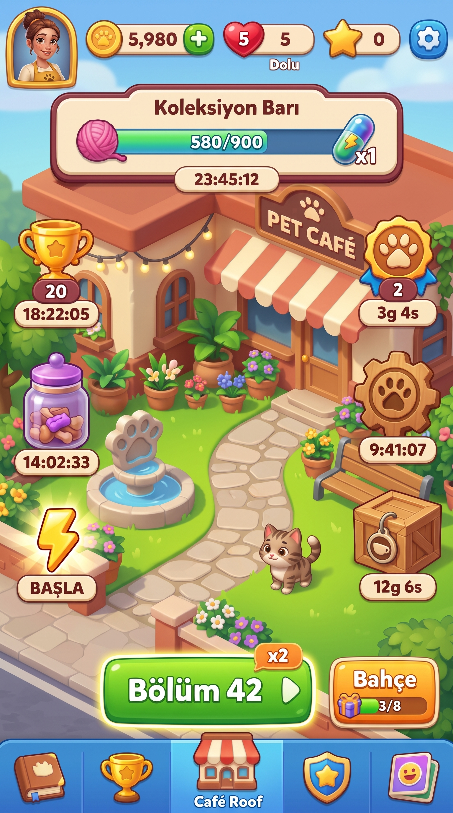
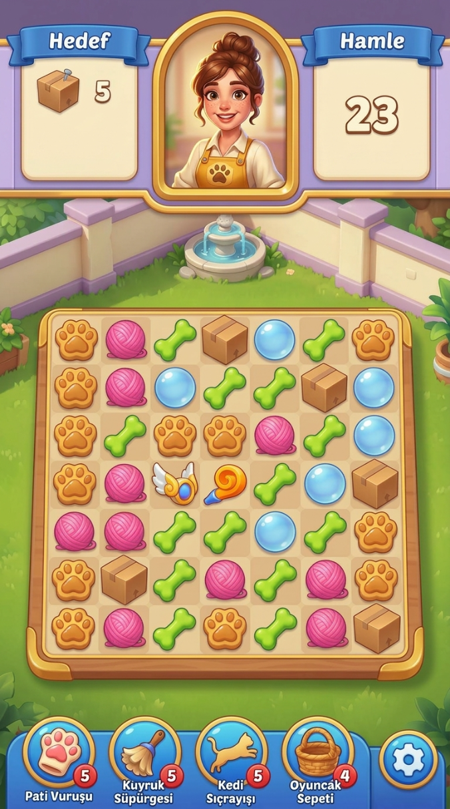